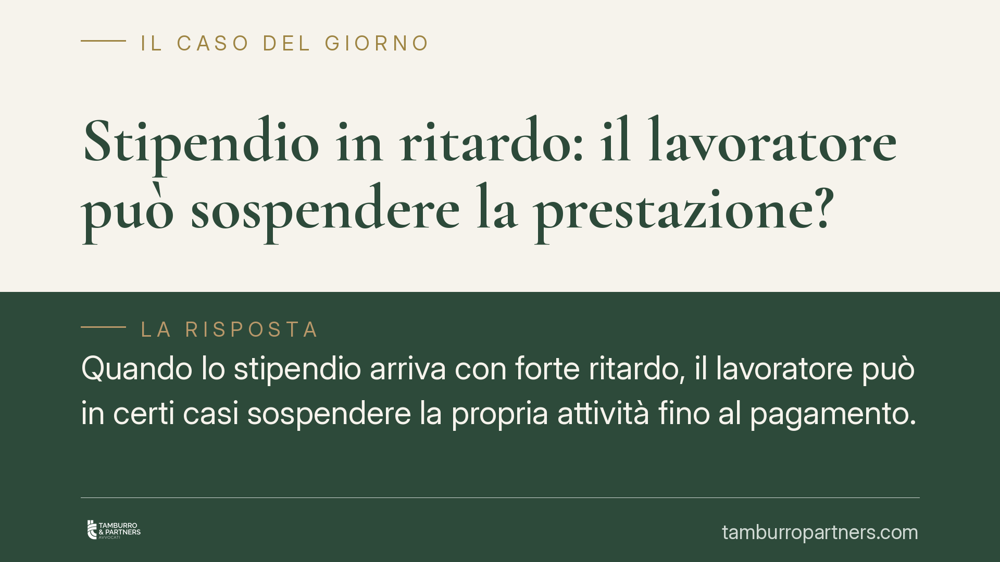

Stipendio in ritardo: il lavoratore può sospendere la prestazione?
Quando lo stipendio arriva con forte ritardo, il lavoratore può in certi casi sospendere la propria attività fino al pagamento. È un diritto, non un capriccio: va esercitato con proporzione e buona fede, altrimenti si rischia il licenziamento disciplinare. La giurisprudenza recente traccia confini precisi che conviene conoscere prima di agire.

Il fatto e perché conta
Il mancato o ritardato pagamento della retribuzione è tra le violazioni contrattuali più frequenti nel rapporto di lavoro. La domanda ricorrente è tanto semplice quanto insidiosa: posso incrociare le braccia finché il datore non salda quanto dovuto?
La risposta è affermativa, ma condizionata. Sospendere la prestazione è possibile, purché il ritardo sia grave e la reazione del lavoratore risulti proporzionata. Fuori da questi limiti, l'astensione diventa un inadempimento del lavoratore stesso, con conseguenze disciplinari.
Inquadramento normativo
Il fondamento è l'art. 1460 del Codice civile, che disciplina l'eccezione di inadempimento (in latino *exceptio inadimpleti contractus*). La regola è intuitiva: nei contratti a prestazioni corrispettive, una parte può rifiutare di eseguire la propria obbligazione se l'altra non adempie o non offre di adempiere la sua.
Nel lavoro subordinato la retribuzione è la controprestazione del datore rispetto all'attività del dipendente. Se il datore non paga, il lavoratore può in linea teorica sospendere l'attività. Lo stesso art. 1460, secondo comma, pone però un freno decisivo: il rifiuto non è ammesso se, avuto riguardo alle circostanze, risulta contrario a buona fede. Qui si gioca tutta la partita.
La giurisprudenza recente ha precisato i contorni. Il Tribunale di Catania (n. 1682/2025) e il Tribunale di Benevento (n. 1367/2024) hanno ribadito che la sospensione è legittima solo di fronte a un inadempimento datoriale grave e non a ritardi minimi o isolati. Il Tribunale di Torino (n. 254/2018) aveva già valorizzato il criterio di proporzionalità tra entità del mancato pagamento e reazione del dipendente. Sul versante estremo, quando il ritardo è reiterato e consistente, la Cassazione (n. 770/2023) conferma la possibilità di dimissioni per giusta causa ai sensi dell'art. 2119 del Codice civile, con diritto all'indennità di mancato preavviso.
Cosa cambia per chi lavora
Il punto pratico è che non esiste una soglia matematica. Un singolo stipendio pagato con qualche giorno di ritardo non giustifica la sospensione dell'attività: reagire in modo sproporzionato espone al rischio di contestazione disciplinare e, nei casi più seri, di licenziamento.
Diverso è il caso di più mensilità non corrisposte o di ritardi sistematici che compromettono la funzione alimentare dello stipendio. In queste ipotesi la sospensione può essere legittima, ma resta soggetta a valutazione del giudice caso per caso. La buona fede impone inoltre di comunicare la propria posizione al datore, non di sparire senza spiegazioni.
La via delle dimissioni per giusta causa è l'opzione più netta: consente di chiudere il rapporto imputando la responsabilità al datore e di ottenere l'indennità sostitutiva del preavviso. Anche qui, però, serve un inadempimento grave e documentato, perché la qualificazione della giusta causa è tutt'altro che automatica.
Cosa fare in concreto
- Documenta tutto: raccogli buste paga, estratti conto ed eventuali riconoscimenti del debito da parte del datore. La prova del ritardo e della sua entità è il presupposto di ogni azione.
- Diffida per iscritto: invia una comunicazione formale (PEC o raccomandata) che intimi il pagamento entro un termine congruo, riservandoti le tutele di legge.
- Valuta la proporzione prima di sospendere: astieniti dall'attività solo di fronte a inadempimenti gravi e reiterati, non a ritardi isolati o di lieve entità.
- Non abbandonare il posto senza preavviso di posizione: comunica al datore la ragione della sospensione, così da restare nel perimetro della buona fede.
- Fatti assistere prima di dimetterti per giusta causa: la qualificazione errata può farti perdere l'indennità di preavviso e indebolire un eventuale contenzioso.
La scelta tra sospensione, diffida e dimissioni dipende dalla situazione specifica e dalla documentazione disponibile. Un'analisi preventiva evita mosse affrettate che possono ritorcersi contro il lavoratore.
Disclaimer
Contributo informativo a cura di Tamburro & Partners - Avv. Giuseppe Tamburro. Non costituisce parere legale.
Ogni storia di lavoro ha i suoi tempi.
Se gestisci HR e vuoi un confronto su contenzioso, ispezioni o licenziamenti, scrivi allo studio. Ti rispondiamo entro un giorno lavorativo.